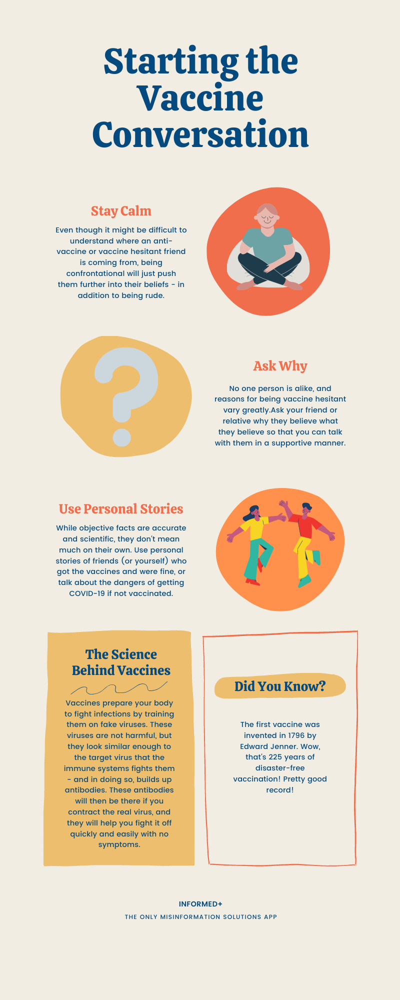

Informed+
Celebs & Coronavirus
Celebs & Coronavirus
Have your favorite celebrities been SURE or SLIPPING when it comes to coronavirus?
SURE: Rihanna! Rihanna's foundation donated over 5 million dollars to COVID-19 relief.
SLIPPING: Madonna! Madonna has shared misinformation about the coronavirus vaccine on Instagram.
This count is updated every day! Check back in later to see how more of your favorite celebrities are handling coronavirus.
The Facts on Misinformation
What is misinformation, and why is it a problem now?
According to a study done by the CIGI (Center for International Governance Innovation), 86% of people have reported falling for “fake news.” While this would be worrying under any circumstances, it is especially alarming now - during the COVID-19 pandemic. Over 125 million people worldwide have caught the novel SARS-Cov-2, commonly referred to as the coronavirus, since it originated late in 2019. With false claims spreading nearly as rapidly as the virus itself, getting control of misinformation could be the key to getting control of COVID-19. The coronavirus misinformation crisis originated in January and February of 2020, as COVID-19 was becoming a global concern. Unlike the anti-vaxx movement, coronavirus misinformation is not a cohesive group, instead coming from a wide variety of sources, many much closer to home than we would like to think. Misinformation has a huge effect on coronavirus regulation compliance, leading thousands to forego masks and vaccinations. As one can imagine, this has very dangerous health consequences, especially for a virus as contagious as COVID-19. In addition to health dangers, the coronavirus pandemic has taken a vast economic toll on both governments and individuals, which is exacerbated as misinformation prolongs the pandemic. Public media illiteracy is not an individual fault, it is a societal problem that education can change. Luckily, there are many strategies that you as an individual can take to recognize and stop the spread of misinformation in our own community. Although many teens think they know the facts about the coronavirus, misinformation both online and offline is influencing teens to engage in hazardous behaviors; therefore, we as a town need to take it upon ourselves to educate and inform teenagers about the dangers of misinformation in order to finally control the COVID-19 pandemic. - Excerpt from my Capstone Research Paper
Check Yourself
Could you accidentally be spreading misinformation?
Ask yourself the SAFE questions before sharing an article or video:
Sources: Is your source official and not satirical?
Author: Is an author listed for the piece? If not, why wouldn't someone want to be associated with it?
Factual: Does the content contradict previous articles you have read on the topic?
Evidence: Does the article give evidence supporting their claim?
Do Your Part!
Good news - just by reading this, you have already begun to help stop misinformation. If you avoid spreading misinformation yourself, and call it out when you see it, half the battle is already done! Here are some more easy steps you can take in your everyday life to stop misinformation spread.
1) Use the SAFE method to check your sources before you share.
2) Talk - politely - to friends and relatives who are hestiant to get the vaccine, and show them the facts on why it is safe (you can use the Conversations on Vaccines guide in the resources section).
3) Donate to Poynter (https://www.poynter.org/support/), a fact-checking organization that has been working tirelessly to help people know what is true and false on social media.
Resources & Guides
Feel free to print, share, or screenshot these guides to help remember the best ways to stop misinformation spread!

Download Here
Download Here
User Survey
Please fill out this quick survey to give us feedback on your Informed+ experience!
test